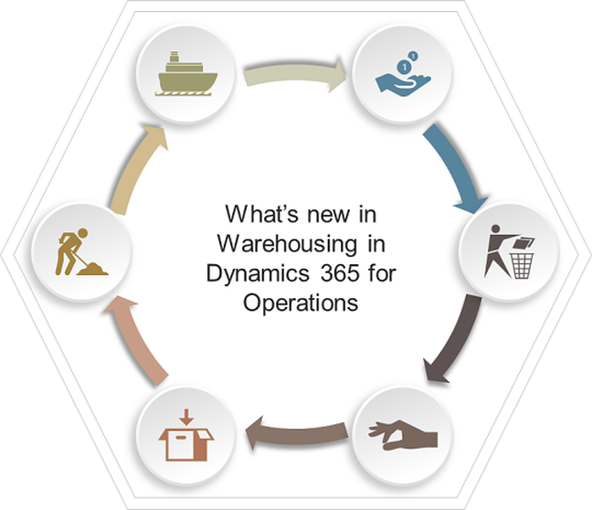

BLOG
 What’s new in Microsoft Dynamics 365 for Operations, Part 2: Warehousing and mobile
What’s new in Microsoft Dynamics 365 for Operations, Part 2: Warehousing and mobile
August 1, 2017| Real Dynamics Team
In Part-1 of this two-part series, we explored supply chain enhancements in Dynamics 365 for Operations.
This time, we will explore new capabilities in warehousing and the Dynamics 365 for Operations mobile app.
As Microsoft describes the Warehousing module of Dynamics 365 for Operations, you can:
"Automate your warehouse processes to reduce operational costs. With Microsoft ERP, your warehouse managers can better control their put-away, quality-control, and picking operations. And, with a flexible workflow engine, they can rapidly respond to changing business needs."
Let us explore what all these capabilities looks like, in detail.
Warehouse enhancements for high-volume distribution centers
Several enhancements have been made to enhance the productivity of warehouse workers by adding flexibility and effectiveness to operations after work has been created. Additions to the packing station functionality include the ability to:
- Create work after packing. This is important when there are additional processes after manual packing (such as palletizing, quality inspection, consolidation of shipments, or changes to loading docks). These steps can now be modelled with separate work steps in the warehouse management solution for Dynamics 365 for Operations.
- Group containers. This allows multiple packages to be grouped into one container or license plate. For example, an eCommerce operator can group 100 individual packets into one container that can be further processed (moved, staged, loaded) by just scanning one barcode (license plate) for the grouped container.
- Create a release policy for packed containers. The creation of work that's triggered by container release can be automated or manual. When it's automatic, work is generated at container closure using the location directive and work template framework. A manual release empowers the packer to decide when the work should be generated - for a single container or for a group of containers. This feature reduces the risk of picking and moving closed containers that aren't yet ready to be moved from the packing station. It allows for non-system steered grouped release.
Also, support has been added for short-pick processes, and when an associate wants to fulfil an order with an item that is available elsewhere. It's possible to use an automatic re-allocation process, which uses location directives to retrieve. Alternatively, when manual re-allocation is used, a list of the locations with the relevant item is shown on the mobile device, allowing the warehouse worker to choose a source location. These two methods can be set individually or combined as a single command on the warehouse worker menu.
It is now possible to move inventory that has work associated to it. This can be useful if, for example, a worker wants to clear some inbound dock space and move registered pallets that are waiting to be put away to another inbound location. The dock is cleared and can receive an additional load of goods, and the inventory that's been moved is updated with new put-away information.
You can also merge license plates that have outbound work associated with them. For example, when a pick has been broken into several pieces of work, it can be useful to allow the license plates to be merged after they are delivered at the staging location.
It is now possible to freeze work at the line level instead of at the header level, so workers can fulfil the pick lines that aren't frozen by demand replenishment. This feature allows a wholesaler with large sales orders or a retailer with large replenishment transfer orders to allow the picking work to start on all lines that are not subject to replenishment work enabling parallel completion of the picking and replenishment work.
Work can now be cancelled using the mobile device, with or without demand replenishment. Previously, this process was only possible using the rich client.
Warehouse operation enhancements
Enhancements for warehouse operations include:
- Support for container types in inbound processing. You may use different container types in the warehouse to control storage optimization and other processes. The new Container Type entity uses the physical characteristics of the container types. You can now associate license plates with a specific container type and use location stocking limits. For example, you can control how many pallets (or other container types) you allow at a specific location. Container types have also been added to unit sequence groups to add default container types for the receiving process. Container types can be used with inbound and outbound location directives, and on the inventory-on-hand view to identify how many container types are currently stored.
- Reverse ship confirmation is enabled for all source documents, as well as the cancellation of packing slips and product receipts. In a warehouse, it's important to be able to handle late changes; for example, some goods might be damaged making shipment impossible, or a customer wants to cancel or change an order. Dynamics 365 for Operations supports the ability to reverse a shipment, allowing for cancellation of a packing slip that can later be updated with correct quantities. Similarly, on the inbound flow it's possible to cancel product receipts so that an updated version can be created.
- Support for receipt and put-away of pallets containing mixed items. It is now possible to receive and register a "mixed" pallet, with different items on one pallet that relate to one or several purchase orders or lines. All registrations can be summarized into one target license plate. This process is enabled though the warehouse mobile device. For example, when the mixed pallet arrives, the receiving clerk identifies the items and the quantities before the pallet is moved to dedicated put-away locations; those locations are identified by work templates and location directives. If the put-away locations are spread over several items with fixed locations, this feature creates as many work lines as there are different items on the pallet. Thus, registering and put-away of the received mixed items pallets is faster and more flexible.
Additional warehouse support in manufacturing
This release introduces new workflows for the handheld mobile device, which enable you to:
- Use a handheld device to register empty Kanban through scan of the Kanban card. When an empty scan is registered, a new Kanban is created for replenishment.
- Register material consumption of unreserved batches and serial numbers from both license plate and non-license plate controlled locations. The registered material will be posted against the production order in the Production picking list journal.
Enable withdrawal Kanban for warehouse processes
Support will be added for the withdrawal Kanban in production to replenish material on the production floor for lean, discrete, and process manufacturing. This will make it possible to release work for Kanban picking for the withdrawal Kanban, so that items can be picked from non-fixed locations in the warehouse.
Advanced warehousing in retail
This functionality will let retailers use the advanced warehouse management solution in their stores. Stores can be modelled as advanced warehouses so it is possible to take advantage of all the advanced warehouse functionality, including hand-held solutions. In addition, all current retail store inventory processes and any point-of-sale (POS) process that creates or updates inventory transactions has been updated to work with the specific requirements for advanced warehouses.
- POS inventory lookup in a Dynamics 365 for Operations Warehousing-enabled store shows the available quantities across other stores and warehouses.
- Process a product receipt for a purchase order in POS for a Warehousing-enabled store and items, which makes it easy to select locations and receive into and enter the license plate to auto populate receiving lines.
- Process a product receipt for a transfer order in POS for a Warehousing-enabled store and items, which makes it easy to select locations and receive into and enter the license plate to auto populate receiving lines.
- Process a shipment of products from the Warehousing-enabled store and items, which allows you to select locations to ship from, as well as ignore license plate and inventory status.
Cross-docking from production to transfer orders
A new option for cross docking from a production or batch order to released transfer orders is upcoming. This is relevant in manufacturing if the material produced is immediately transferred to remote warehouses and distribution centers, and not stored at the production site. A work policy will be used to query for cross-docking opportunities. This will include the product and the location for the produced goods.
Warehouse work policies (released in D365)
After ensuring data has been successfully extracted from D365 for Operations, it is time to view the same in Azure SQL Database. The figure below illustrates one of my favorite ways of exploring data in Azure SQL DB using SQL Server Object Explorer in Visual Studio (2015 Professional):
For this you need to download an add-in from Azure/Microsoft, then create a new database connection by providing adequate connection and security details. Once the connection is established, the data from D365 for Operations can be browsed or otherwise used in your data warehouse.
The new warehouse work policy is applicable for specific locations and products.
Typically, warehouse work for finished goods put-away and co-products and by-products put-away is created when a production order is reported as finished. By using the new warehouse work policy, you have the flexibility to control whether warehouse work needs to be created for finished goods put-away and co-products and by-products put away. For example, this can be useful if the finished goods from one production area are reported to a location where the goods are later consumed.
Warehouse work for raw material picking is typically created when releasing a production or batch order. By using the new warehouse work policy, you have the flexibility to control whether warehouse work for raw material picking needs to be created. This can be useful if, for example, the material consumed by production is received directly where it is consumed.
Microsoft's Warehouse Management home page, provides more details
New Dynamics 365 for Operations mobile app
We can now design mobile experiences to enable your users to stay productive while on the move. The mobile approach allows you to reuse business logic and modelling from the product while enabling rich offline and mobile interactions, and an easy-to-use designer experience.
Dynamics 365 for Operations brings support for a mobile phone app (to be available on iTunes App Store for iPhones, Google Play Store for Android phones, and Windows Store for Window phones).
Developers can create simplified forms in Microsoft Visual Studio and then design mobile pages that expose this functionality. This mobile solution makes it easy to change the forms and mobile app definitions in order to include customizations made to the product.
Mobility and modern user experience
Retailers will benefit from leveraging a POS application that is built on a state of the art, cloud engineered, secure, and flexible architecture, designed and optimized to run on different form factors, and across Windows, iOS, and Android.
Key capabilities expected:
- A single, universal POS application that is designed to run on phones, tablets, and PCs based on Universal Windows Platform.
- Consistent user experiences, including common navigation, recognizable patterns, and intuitive interactions with a responsive and consistent shell.
- Rich functional capabilities that are optimized for touch and keyboard experiences.
- An iOS application for phones and tablets.
- Centrally managed and targeted for stores, registers, or specific users.
- A user interface to match unique processes and the ability to define specific layouts for specific layout sizes targeted for specific devices.
- The ability to allow retailers to ensure that the aesthetics resonate and communicates a unique brand.
- Simple and easy deployment (self-serve).
- Configurability to connect to Microsoft Cloud or Retail Store Server.
Mobile in production operations
The mobile app for production will make it possible to start, complete, or cancel production activities or operations on a mobile device. It can also be used to handle units on the shop floor or in the warehouse by scanning the bar code of the attached labels, such as license plates. Based on the scan results, the app will show related information which would enable warehouse personnel on the move to make informed decision using right information available on time.
New mobile warehouse app
An application is expected that will allow handheld mobile devices to run warehouse operations connected to Dynamics 365 for Operations without installing the Warehouse Mobile Devices portal.
The app will use the existing business logic for handheld devices to run warehouse operations, but it will have a new simplified responsive user interface that dynamically scales to the screen size and resolution of the handheld device. It will also be possible to show a company logo on the log-in screen and product pictures as part of the warehouse operations.
If you have any question contact us on info@realdynamics.com
Recent post
-
How-to: Bring your own data warehouse to Microsoft Dynamics 365 for Operations
September 1, 2017|| Real Dynamics Team
-
What’s new in Project accounting and management in Microsoft Dynamics 365 for Operations
July 1, 2017| Real Dynamics Team
-
What’s new in Microsoft Dynamics 365 for Operations – Supply Chain
June 1, 2017| Real Dynamics Team
-
What's new in Microsoft Dynamics 365 for Operations - Financials, Part 3
May 1, 2017|Real Dynamics Team
-
What's new in Microsoft Dynamics 365 for Operations - Financials, Part 2
April 1, 2017| Real Dynamics Team
-
Microsoft Dynamics AX Company Split
March 3, 2017| Real Dynamics Team
-
What's new in Dynamics 365 for Operations (AX7) - Financials, Part 1
February 1, 2017| Real Dynamics Team
-
Budgeting Capabilities in New Microsoft Dynamics AX (Dynamics 365)
January 1, 2017| Real Dynamics Team